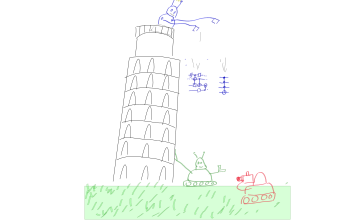

Machine learning compilation of quantum circuits – experiments
Flexible and efficient learning with JAX+numpy
qiskit
JAX
machine learning
compilation
Published
December 13, 2021
Code
# If you are running this notebook in Colab, you might need to restart# the environment after the installations.from functools import partialimport matplotlib.pyplot as pltimport numpy as npimport jax.numpy as jnpfrom jax import random, value_and_grad, jit, vmap, grad, laxfrom scipy.stats import unitary_grouptry:import optaxexceptImportError:!pip install optaximport optaxtry:import qiskitexceptImportError:!pip install qiskit!pip install pylatexenc # required for circuit drawing.import qiskitfrom qiskit import QuantumCircuit, transpilefrom qiskit.quantum_info import Operator, Statevectorfrom qiskit.circuit import Parameterfrom qiskit.transpiler.passes.synthesis import UnitarySynthesisfrom qiskit.transpiler import PassManagerfrom qiskit.converters import circuit_to_gate
Introduction
Motivation
Ever since I read the paper by L.Madden and A.Simonetto (original preprint, my review) I knew I want to do this kind of experiments myself. At first I hoped that there is a well-developed software framework where I can easily build quantum circuits and then optimize them efficiently. However, I was not able to find a good fit for my problem. For example, to the best of my knowledge qiskit currently only provides acess to zero-order optimization routines. I later found quimb which might do what I want, but in the end I’m glad I worked things out from scratch. Eventually I went for numpy+JAX combination which while being quite low-level was not a big problem to get working and shows a decent speed. I owe a ton to Ilia Luchnikov for introducing me to the framework and helping throught.
In this post I will give a walk thorough this implementation and show experiments with compilation of random unitaries. However, in my opinion truly interesting stuff is concerned with the compilation of special gates, say multi-controlled Toffolis on restricted connectivity. I intend to look at this kind problems in detail in a future blog post. You may wish to take a look at this preprint for advances in that direction.
NOTE: While I was working on my experiments another preprint appeared, by P.Rakyta and Z.Zimborás, which is very similar to the work of M&S in terms of numerical results. Despite the striking similarities these works are independent. As a bonus R&Z also provide a numerical package SQUANDER that allows to play with their framework for compilation of unitaries. You might want to check that out if you are interested in doing some experiments yourself.
The problem
OK, so first a brief recap of what is the compilation problem. Given a quantum circuit we need to find an equivalent one, which satisfies certain requirements. A typical restrictions are to use only some specific two-qubits gates and to be compatible with limited connectivity. I gave a more detailed intro here. Here is a nearly-trivial example: a simple \(CNOT\) gate
Now, for generic \(n\)-qubit unitaries one needs exponentially many entangling gates for the compilation. More precisely, there is a theoretical lower bound\(\#CNOTs\ge \frac14 \left(4^n-3n-1\right)\) on the amount of \(CNOT\)s required for compilation of any \(n-\)qubit unitary outside a measure zero set. Crucially, this measure zero set might in fact be of principal interest to quantum computing as it includes many operators featuring in most algorithms (such as multi-controlled gates). In this post I will only adress compilation of random unitaries and discuss compilation of special cases in a future post. For later reference here is the function computing the theoretical lower bound.
def TLB(n):returnint((4**n-3*n-1)/4+1)for n inrange(1, 7):print('TLB for {}-qubit unitary is {}'.format(n, TLB(n)))
TLB for 1-qubit unitary is 1
TLB for 2-qubit unitary is 3
TLB for 3-qubit unitary is 14
TLB for 4-qubit unitary is 61
TLB for 5-qubit unitary is 253
TLB for 6-qubit unitary is 1020
Now, there is an algorithm called quantum Shannon decomposition to decompose an arbitary \(n\)-qubit unitary into a sequence of \(CNOT\)s and single-qubit rotations which requires roughly twice as many \(CNOT\)s as the theoretical lower bound implies. In complexity-theoretic terms this is definitely good enoough, the overhead is just a small constant factor. However, for NISQ devices doubling the amount of gates is not a trivial matter. Is it possible to do better?
3-qubit example
As papers M&S and R&Z show, one can do better and eliminate the 2x overhead, at least numerically. Namely, it seems that precisely at the theoretical lower bound the exact or nearly-exact compilation of any unitary is possible. Here is a real-life example. Consider the following 3-qubit circuit with \(TLB(3)=14\)\(CNOT\) gates
The claim is that with the appropriate choice of angles in rotation gates it can morhp into any 3-qubit unitary (and in fact at least this many \(CNOT\)s are needed for almost all 3-qubit unitaries). To find the corresponding angles it is sufficient to run a numerical optimization minimizing the fidelity between this circuit’s unitary and the target unitary. To me this is rather imressive, but raises several questions. Why choose \(CNOT\) gates of all entangling gates? Why place them in that exact order as shown at the figure? It appears to be an empirical fact that precise location of entangling gates as well as their choice (\(CNOT\), \(cz\), etc) makes little difference. Moreover, even restricted connectivity does not seem to force an overhead for compilation. It is my main goal to back up these claims with numerical experiments in an interactive way. In particular, I will illustrate the following points.
Exactly at the theoretical lower bound a nearly-exact compilation seems to always be possible (at least for up to 6 qubits). This is a 2x improvement over the best theoretical decomposition.
Both \(cz\) and \(CNOT\) gates perform equally well. It is tempting to guess that any entangling gate will perform similarly.
The maximum fidelity is a monotonic function of the number of entangling gates. This implies that simply counting 2-qubit gates gives a good measure of circuits expressivity.
The most remarkable for me is the fact that even a restricted topology seems to cause no overhead on compilation cost. I will show that even on a chain topology the same amount of \(CNOT\)s is sufficient to reach good fidelity.
What you’ll find if you keep reading
The rest of this post is divided into two parts. In the first I write some numpy/JAX/qiskit code that allows to construct and efficiently optimize parametrized circuits. I try to give some explanations of the underlying numerical framework, but please take into account that my own understanding is rather limited. Still, the resulting performance seems to be good enough to reproduce results of the existing preprints. I advise to skip this part if you are only interested in the results.
In the second part of the post I will do a number of experiments compiling random unitaries with varying numbers of qubits, different types of entangling gates, restricted connectivity and try to draw some general lessons from them. I tried to make this part independent of the first, although I didn’t stop all the implementation details from sinking trough.
NOTE: This blog post is also a fully functional jupyter notebook. You can open it in Colab or download locally and perform more experiments yourself!

Numerical framework
Entangling blocks
First let us define the basic 1- and 2-qubit gates in matrix form. For now you can safely ignore the use jnp arrays instead of np arrays.
WARNING:absl:No GPU/TPU found, falling back to CPU. (Set TF_CPP_MIN_LOG_LEVEL=0 and rerun for more info.)
The circuits that we are going to train will be built out of two types of 2-qubit blocks, the controlled-Z and the controlled-NOT. Here are the definitions:
class block():"""Two-qubit entangling block. Methods: circuit: gives equivalent `qiskit` circuit. unitary: gives `jax.numpy` unitary matrix of the circuit. """def__init__(self, gate_name, angles):self.gate_name = gate_nameself.angles = anglesdef circuit(self):"""Quantum circuit in `qiskit` corresponding to our block.""" qc = QuantumCircuit(2)ifself.gate_name =='cx': qc.cx(0, 1)elifself.gate_name =='cz': qc.cz(0, 1)else:print("Gate '{}' not yet supported'".format(self.gate_name)) angles = np.array(self.angles) # convert from JAX array to numpy array if applicable. qc.ry(angles[0], 0) qc.rx(angles[1], 0) qc.ry(angles[2], 1) qc.rx(angles[3], 1)return qcdef unitary(self):"""JAX-compatible unitary corresponding to our block."""ifself.gate_name =='cx': entangling_matrix = cx_matelifself.gate_name =='cz': entangling_matrix = cz_matelse:print("Gate '{}' not yet supported'".format(self.gate_name)) x_rotations = jnp.kron(rx_mat(self.angles[1]), rx_mat(self.angles[3])) y_rotations = jnp.kron(ry_mat(self.angles[0]), ry_mat(self.angles[2]))return x_rotations @ y_rotations @ entangling_matrix
Here is how they look: cz block
a0, a1, a2, a3 = [Parameter(a) for a in ['a0', 'a1', 'a2', 'a3']]block('cz', [a0, a1, a2, a3]).circuit().draw(output='mpl')
Our block class can return a qiskit circuit and the corresponding unitary matrix. Of course we could have extracted the unitary from the circuit itself via qiskit API, but this would make the matrix representation incompatible with JAX which will be our workhorse for optimization. To the best of my knowledge currently it is only possible to use zero-order methods directly from qiskit which is a serious limitation. So at this point we needed a bit of wheel reinvention. Let’s check that our implementation is consistent with qiskit:
# That's how you use random numbers with JAX. Don't worry if this is not familiar, not essential for our purposes.angles = random.uniform(random.PRNGKey(0), shape=(4,), minval=0, maxval=2*jnp.pi)for gate in ['cx', 'cz']: b = block(gate, angles) qc = b.circuit() qs_unitary = Operator(qc.reverse_bits()).data # Yes, we need to reverse bits in qiskit to match our conventions. our_unitary = b.unitary()print('qiskit unitary is the same as our unitary for block with gate {}: {}'.format(gate, jnp.allclose(qs_unitary, our_unitary)))
qiskit unitary is the same as our unitary for block with gate cx: True
qiskit unitary is the same as our unitary for block with gate cz: True
To match matrix representations of quantum circuits might be a headache as I discussed in another post, so this was a necessary check to do.
Our two building blocks (cz and cx) only differ by the type of the two-qubit gate. The circuits that we are going to build seem to do equally well for any choice of two-qubit gate. I will mostly use cz gate because it is symmetric under the swap of qubits, but I will also occasionally bring up the cx gate to illustrate that it has the same performance. Angles \(a_0\)-\(a_3\) are going to be optimized.
Optimization with JAX
A word about JAX
What is JAX? Well, I personally think of it as numpy on steroids. You can check out the official documentation or numerous nice overwievs on the web. For our purposes two key features of JAX are 1. Autograd.
2. JIT or just-in-time compilation.
Autograd allows to define functions the same way you do in numpy and have analytic derivatives available with no extra coding on your side. At the moment grad function can only be applied to real scalars. For example, let us define the absolute value of the trace of cx block as function of rotations gate angles
def block_tr_abs(angles): b = block('cx', angles) tr = jnp.trace(b.unitary())return jnp.abs(tr)
Since everything so far has been defined using jax.numpy we have immediate access to the gradient of this function
Autograd feature of JAX allows us to just define the loss function associated with our circuit in plain numpy terms and use advanced first-order optimizers such as Adam out of the box.
The next crucial ingredient is jit-compilation. When used with a bit of care, it allows to speed up evaluation of similar expression by orders of magnitude. For example let us compare runtimes of the jitted and unjitted versions of our trace function. Let’s first define a sample of random angles
and now time evaluation of unjitted trace function
%%timefor angles in test_angles: block_tr_abs(angles)
CPU times: user 12.3 s, sys: 1.02 s, total: 13.3 s
Wall time: 11.4 s
Now awe to the power of jit!
%%timejit_block_tr_abs = jit(block_tr_abs)for angles in test_angles: jit_block_tr_abs(angles)
CPU times: user 156 ms, sys: 7.94 ms, total: 164 ms
Wall time: 145 ms
What happened here is that during the first call to the jitted function it’s efficient XLA version was compiled and then used to evaluate all subsequent calls.
Gradient descent
We will use the following measure of discrepancy between two unitaries \(disc(U, V) = 1-\frac1{N}\operatorname{Tr}\left( U^\dagger V\right)\) where \(U,V\) are \(N\times N\) matrices. It is normalized so that \(disc(U,U)=0\) and \(disc(U,V)=0\) when \(U\) and \(V\) are orthogonal. Note that this measure is insensitive to global phases.
def disc(U, U_target): n = U_target.shape[0]return1-jnp.abs((U.conj() * U_target).sum())/n
Here is the optimization routine that we are going to use. It is pretty straightforward and I will not give much explanations, but illustrate with an example.
@partial(jit, static_argnums=(0, 1, )) # <--- Here is where the magic happens! # Remove this line and everything will run 1000 times slower:)def unitary_update(loss_and_grad, opt, opt_state, angles):"""Single update step.""" loss, grads = loss_and_grad(angles) updates, opt_state = opt.update(grads, opt_state) angles = optax.apply_updates(angles, updates)return angles, opt_state, lossdef unitary_learn(U_func, U_target, n_angles, init_angles=None, key=random.PRNGKey(0), learning_rate=0.01, num_iterations=5000, target_disc=1e-10):"""Use Adam optimizer to minimize discrepancy between pamaterzied unitary and targe unitary. Args: U_func: function of angles returning univary matrix. U_target: unitary matrix to approximate. n_angles: total number of angles (parameters) in U_func. init_angles: intial angles for gradient descent. If not provided chosen at random. key: random seed to use for inizialization of initial angles. learning_rate: learning rate in Adam optimizer. num_iterations: maximum number of iterations. target_disc: stop optimization if discrepancy drops below target_disc. Returns: tuple (angles_history, loss_history) where angles_history: list of angles (parameters) at each iteration step. loss_history: values of loss_function at each iteration step. """# If initial angles are not provided generate them at random.if init_angles isNone: key = random.PRNGKey(0) angles = random.uniform(key, shape=(n_angles,), minval=0, maxval=2*jnp.pi)else: angles = init_angles# Loss function to minimize is dicrepancy defined above. loss_func =lambda angles: disc(U_func(angles), U_target) loss_and_grad = value_and_grad(loss_func)# Optimizer is taken from the `optax` library and its use is self-explanotory. opt = optax.adam(learning_rate) opt_state = opt.init(angles)# Optimization cycle angles_history=[] loss_history=[]for _ inrange(num_iterations): angles, opt_state, loss = unitary_update(loss_and_grad, opt, opt_state, angles) angles_history.append(angles) loss_history.append(loss)if loss < target_disc:breakreturn angles_history, loss_history
OK, now a very simple example. Say we want to find a \(ZXZ\) decomposition of \(Y\)-gate. Define:
Learning is now very simple: we give unitary_learn the ansatz unitary as function of angles, the target unitary and also explicitly the number of parameters to be trained:
Now it’s time to build full quantum circuits. We will think of a quantum circuit on \(n\) qubits as a tensor with \(2*n\) legs. First \(n\) legs correspond to output and last to \(n\)input. This is illustrated at the picture.
It is natural for input legs to be on the left because in matrix notation a unitary \(U\) acts on a state \(\psi\) by left multiplication \(U\psi\). On the other hand note that quantum circuits are usually drawn left-to-right and to compare the two descriptions a left-right reflection must be made.
Suppose now that given an \(n-\)qubit circuit \(U\) we want to append an additional \(m-\)qubit gate \(V\) at the end. Here is a concrete example (a picture is worth a thousand words!)
Several things to keep in mind:
To append gate \(V\) at the end in quantum circuit notation, we need to draw it on the left here.
Tensor legs are joined by numpy’s tensordot operation. Which axes to contract is clear from the picture – we need to join axes 2, 3 of \(V\) to 1, 3 of \(U\).
In the resulting tensor the output legs are not in the correct order. Instead of being numbered from top to bottom after tensordot first several axes are those of \(V\) and the remaining are uncontracted output axes of \(U\) (take a look at the leftmost column of numbers). This needs to be corrected by explicit transposition of output axes.
The final caveat is that if some of the legs connecting gate to the circuit are twisted the output legs needs to be transposed accordingly. Here is an example
Here is the code that implements this program.
def gate_transposition(placement):"""Determine transposition associated with initial placement of gate.""" position_index = [(placement[i], i) for i inrange(len(placement))] position_index.sort() transposition = [i for _,i in position_index]return transpositiondef transposition(n_qubits, placement):"""Return a transposition that relabels tensor axes correctly. Example (from the figure above): n=6, placement=[1, 3] gives [2, 0, 3, 1, 4, 5]. Twiseted: n=6, placement=[3, 1] gives [2, 1, 3, 0, 4, 5].""" gate_width =len(placement) t =list(range(gate_width, n_qubits))for position, insertion inzip(sorted(placement), gate_transposition(placement)): t.insert(position, insertion)return tdef apply_gate_to_tensor(gate, tensor, placement):"""Append `gate` to `tensor` along legs specified by `placement`. Transpose the output axes properly.""" gate_width =int(len(gate.shape)/2) tensor_width =int(len(tensor.shape)/2)# contraction axes for `tensor` are input axes (=last half of all axes) gate_contraction_axes =list(range(gate_width, 2*gate_width)) contraction = jnp.tensordot(gate, tensor, axes=[gate_contraction_axes, placement])# input(=last half) indices are intact t = transposition(tensor_width, placement) +list(range(tensor_width, 2*tensor_width)) return jnp.transpose(contraction, axes=t)
Now, using this tensor language we will construct unitary matrices corresponding to our ansatz circuits. To specify the ansatz we must supply the number of qubits in the circuit, type of entangling blocks to use and arrangement of these blocks.
The simplest way to specify arrangement would be to just give a list like [[0,1], [1, 3], [2, 1]] etc of pairs of qubits to put entangling blocks on to. However for performance reasons I need to make it more complicated. To construct a matrix for our quantum circuit we basically need to loop over all entangling gates and append them one by one. When using JAX plain python loops are simply unrolled and then compiled. For large loops this leads to very large compilation times. If there is no structure in how we place our gates in the circuit this is probably the best one can do. However, we can be more efficient than that if there is a structure. Take a look at this picture
Code
qc = QuantumCircuit(4)i =0for _ inrange(11): qc.cx(i,i+1) i = (i+1) %3if i %3==0: qc.barrier()qc.draw()
░ ░ ░
q_0: ──■─────────────░───■─────────────░───■─────────────░───■───────
┌─┴─┐ ░ ┌─┴─┐ ░ ┌─┴─┐ ░ ┌─┴─┐
q_1: ┤ X ├──■────────░─┤ X ├──■────────░─┤ X ├──■────────░─┤ X ├──■──
└───┘┌─┴─┐ ░ └───┘┌─┴─┐ ░ └───┘┌─┴─┐ ░ └───┘┌─┴─┐
q_2: ─────┤ X ├──■───░──────┤ X ├──■───░──────┤ X ├──■───░──────┤ X ├
└───┘┌─┴─┐ ░ └───┘┌─┴─┐ ░ └───┘┌─┴─┐ ░ └───┘
q_3: ──────────┤ X ├─░───────────┤ X ├─░───────────┤ X ├─░───────────
└───┘ ░ └───┘ ░ └───┘ ░
Here \(CNOT\)s are just placeholders for any entangling block of our interest. There is a regular pattern. Most of the circuit consists of identical layers up to a couple of final gates. Construction and optimization of such circuits with JAX can be made way more efficient by using lax.fori_loop (see here for docs) or a similar construct. This allows to exploit the regularity and reduce the compilation time dramatically.
The price to pay is a bit of a hassle in separating all gates into regular ones and the remainder. My core function build_unitary accepts the regular layers as an argument layer_placements=[layer, number_of_repetitions] and the remainder gates are described by free_placements. Also, we need some way to access all parameters (angles) in our circuit. I chose the simplest approach here, to supply angles as a 1d array, but internally they play a bit different roles so there is also a function split_angles to separate a 1d array of all angles into several logical blocks.
OK, so here is the code. Examples are found in the end of this section.
def split_angles(angles, num_qubits, layer_len, num_layers, free_placements_len):"""Splits 1d array of all angles in a circuit into four groups. Args: angles: all angles in a circuit as 1d array. num_qubits: number of qubits in a circuit. layer_len: length (depth) of a single layer in a circuit. num_layers: number of repeated layers. free_placements_len: number of entanglig blocks not in layers. Returns: a tuple (surface_angles, layers_angles, free_block_angles) where surface_angles: angles in initial single-qubit blocks. block_angles: angles of all entangling blocks. layers_angles: angles for entangling blocks that are parts of complete layers. free_block_angles: angles of remaining entangling blocks. """ surface_angles = angles[:3*num_qubits].reshape(num_qubits, 3) block_angles = angles[3*num_qubits:].reshape(-1, 4) layers_angles = block_angles[:layer_len*num_layers].reshape(num_layers, layer_len, 4) free_block_angles = block_angles[layer_len*num_layers:]return surface_angles, block_angles, layers_angles, free_block_anglesdef build_unitary(num_qubits, block_type, angles, layer_placements=((), 0), free_placements=()):""" Builds `JAX`-compatible unitary matrix of a quantum circuit. Arguments specify structure of the circuit and values of parameters. Args: num_qubits: number of qubits. block_type: type of entangling block to use. Currently only 'cx' and 'cz' are supported. angles: 1d array of all angle parameters in the circuit. layer_placements: a tuple (single_layer, n) where `single_layer` specifies positions of several entangling blocks and `n` how many time to repeat each layer. free_placements: Positions of entangling blocks that do no belong to layers. Returns: A `jax.numpy` unitary matrix of the quantum circuit. """ layer, num_layers = layer_placements layer_depth =len(layer) num_blocks =len(layer)*num_layers+len(free_placements) # Count all entangling blocks.# Divides 1d array of all angles into three logically distinct groups. surface_angles, _, layers_angles, free_block_angles = split_angles(angles, num_qubits, len(layer), num_layers, len(free_placements))# Initizlizes identity matrix of the proper size. u = jnp.identity(2**num_qubits).reshape([2]*num_qubits*2)# Unitary matrix is built in three steps. # First, 3 single-qubit gates are applied to each qubit.# Second, all entangling blocks that are parts of layers are applied.# Finally, remainder blocks that a not parts any layer are applied.# Initial round of single-qubit gatesfor i, a inenumerate(surface_angles): gate = rz_mat(a[2]) @ rx_mat(a[1]) @ rz_mat(a[0]) u = apply_gate_to_tensor(gate, u, [i])# Sequence of layers wrapped in `fori_loop`.# Using `fori_loop` instead of plain `for` loop reduces the compilation time significantly.# To use `fori_loop` it is convenient to define a separate function that applies a whole layer of gates.def apply_layer(i, u, layer, layers_angles):"""Apply several gates to a given quantum circuit. Supplying the totality of `layers_angles` makes the function compatible with `fori_loop`. Args: i: index of the layer. u: matrix to apply gates to. layer: positions of all gates to be applied. layers_angles: angles of all layers. """ layer_angles = layers_angles[i]for block_angles, position inzip(layer_angles, layer): gate = block(block_type, block_angles).unitary().reshape(2,2,2,2) u = apply_gate_to_tensor(gate, u, position)return uif num_layers>0: u = lax.fori_loop(0, num_layers, lambda i, u: apply_layer(i, u, layer, layers_angles), u)# Adds the remainding (free) entangling blocks.for angles, position inzip(free_block_angles, free_placements): gate = block(block_type, angles).unitary().reshape(2,2,2,2) u = apply_gate_to_tensor(gate, u, position)return u.reshape(2**num_qubits, 2**num_qubits)
Layers
Here are a couple of simple functions to help define gate arrangements. The basic layer is sequ_layer which consists of entangling gates applied to each possible pair of two qubit gates enumerated by pairs \((i,j)\) with \(i<j\).
def sequ_layer(num_qubits):return [[i,j] for i inrange(num_qubits) for j inrange(i+1, num_qubits)]def fill_layers(layer, depth): num_complete_layers = depth //len(layer) complete_layers = [layer, num_complete_layers] incomplete_layer = layer[:depth %len(layer)]return complete_layers, incomplete_layer
Function fill_layers allows to specify how much entangling gates we want in total and splits them into complete layers (to be used as layer_placements) and possible remainder gates (that become free_placements). For example, a sequ_layer on three qubits consists of three gates at positions
sequ_layer(3)
[[0, 1], [0, 2], [1, 2]]
If we want to have the sequ pattern and 10 entangling gates in total we can put three complete layers and a final single gate. fill_layers does just that
Now that we have defined our building blocks and convenience functions to assemble them it is time to pack everything together and reap the harvest.
I will define ansatz class that assembles our building blocks according to a predefined pattern. It’s circuit method gives a qiskit circuit which can be used for visualization and cross-checks. It’s unitary attribute returns fully jax-compatible matrix representation of the same circuit. Finally, its learn method uses our optimization routine to approximate a target unitary. First the code, then an example.
class Ansatz():"""Parametric quantum circuit. Ansatz/parametric circuit is defined by tupes of entangling blocks and their arrangement. Concrete values of parameters are not considered part of the ansatz. Class provides access to both `qiskit` version of the circuit and `jax.numpy` unitary matrix. Attributes: num_qubits: number of qubits block_type: type of entangling blocks num_angles: total number of angles (parameters) in the circuit. unitary: `jax.numpy` unitary matrix of the circuit as function of angles. Methods: circuit: `qiskit` version of the circuit. learn: numerical approximation of the target unitary. """def__init__(self, num_qubits, block_type, layer_placements=[[], 0], free_placements=[]):self.num_qubits = num_qubitsself.block_type = block_typeself.layer, self.num_layers = layer_placementsself.free_placements = free_placementsself.all_placements =self.layer*self.num_layers+free_placementsself.num_angles =3*num_qubits+4*len(self.all_placements)self.unitary =lambda angles: build_unitary(self.num_qubits, self.block_type, angles, layer_placements=[self.layer, self.num_layers], free_placements=self.free_placements)def circuit(self, angles=None): """qiskit version circuit. If angles not specified a parametric circuit is constructed."""if angles isNone: angles = np.array([Parameter('a{}'.format(i)) for i inrange(self.num_angles)]) surface_angles, block_angles, _, _ = split_angles(angles, self.num_qubits, len(self.layer), self.num_layers, len(self.free_placements)) qc = QuantumCircuit(self.num_qubits)# Initial round of single-qubit gates.for n, a inenumerate(surface_angles): qc.rz(a[0], n) qc.rx(a[1], n) qc.rz(a[2], n)# Entangling gates accoring to placementsfor a, p inzip(block_angles, self.all_placements): qc_block = block(self.block_type, a).circuit() qc = qc.compose(qc_block, p)return qcdef learn(self, u_target, **kwargs): """Use numerical optimization to approximate u_target.""" u_func =self.unitaryreturn unitary_learn(u_func, u_target, self.num_angles, **kwargs)
Here is an example that should illustrate how all this can be used.
n_qubits =3block_type ='cx'# For technical reasons all entangling gates are divided into 'layers' and 'free' gates. single_layer = [[0, 1], [2, 1]] # We make single layer consisting of 'cx' block on qubits [0,1]# followed by reversed 'cx' block on qubits [1,2].layers = [single_layer, 3] # The layer is repeated 3 times.free_placements = [[1, 0], [0, 1], [1, 2], [2, 1]] # Apeend remaining `free placements` a.anz = Ansatz(n_qubits, block_type, layer_placements=layers, free_placements=free_placements)
Here is what resulting circuit looks like.
anz.circuit().draw(output='mpl')
Just to make sure let us check that the unitary matrix of this circuit extracted from qiskit agrees with our own implementation for a random set of angles.
Now that the hard work is behind we can sit back and reap the benefits. I will go through a series of examples. Primary goal is to back up the claims from the introduction about reaching the theoretical lower bound, agile performance on restricted topology etc. But I will also try to make clear how my code can be used if you wish to do a little experimenting with it yourself.
Learning 2-qubit random unitary
Let’s start by learning a random 2-qubits unitary. First, define one.
u_target = unitary_group.rvs(4, random_state=0)
Here is the parametrized circuit we are going to use. cz means that the entangling gate is controlled-Z while free_placements are just positions where to put these entangling gates. There isn’t much choice for 2 qubits as you could guess. I will explain why I call these free_placements a bit later.
anz = Ansatz(2, 'cz', free_placements=[[0,1], [0,1], [0, 1]])anz.circuit().draw(output='mpl') # anz.circuit() is a fully-functional `qiskit` version of our ansatz.
CPU times: user 2.45 s, sys: 21.4 ms, total: 2.48 s
Wall time: 2.43 s
The graph shows that we achieve great fidelity in under 500 iterations.
Don’t believe me? Is there a way to tell if this plot indeed reflects a successful compilation without looking under the hood? OK OK, since you’re asking, I will double-check using pure qiskit:
angles = angles_history[-1] # Last(=best) angles in the optimization process.qc = anz.circuit(angles) # genuine qiskit circuit. u_qs = Operator(qc.reverse_bits()).data # qiskit API to extract the unitary matrix.disc(u_qs, u_target) # OK, I guess here you have believe I've implemented the cost function properly.# If you want to compare the matrices component-wise, fine with me.
DeviceArray(2.3841858e-07, dtype=float32)
Similar checks can be done in more complicated scenarios below.
You can move forward to other examples or try some experiments here. Some ideas: 1. Changing gate type from cz to cx (should not affect the result). 1. Decreasing the number of layers (fidelity won’t be nearly as good). 1. Increasing the number of layers (same fidelity with less iterations).
Learning 3-qubit random unitary
I advertised in the introduction that with just 14 entangling gates any 3-qubit unitary can be nearly perfectly approximated. Let me back up this claim. Here is how we can construct the corresponding ansatz.
The way gate placements are passes to Ansatz here require a bit of unpacking. This is an implementation detail I didn’t take enough care to hide. For technical reasons I explained in the numerical section optimization is much faster when gates are arranged in a regular pattern. The pattern we use here is called sequ_layer and for three qubits it is simply
sequ_layer(num_qubits)
[[0, 1], [0, 2], [1, 2]]
i.e. it just lists all possible pairs of three qubits. However, since 14 % 3 = 2 the two last gates do not fit into the regular pattern and require a bit of a special treatment. This is what the function fill_layers does for us. Indeed
layer_placements, free_placements = fill_layers(sequ_layer(num_qubits), depth)print('basic layer is repeated four times:', layer_placements)print('remaining blocks reside at positions:', free_placements)
basic layer is repeated four times: [[[0, 1], [0, 2], [1, 2]], 4]
remaining blocks reside at positions: [[0, 1], [0, 2]]
I hope that did explain the way that gate positions are passed to the Ansatz. Instead of sequ_layer you can pass any arrangment of gates to be periodically repeated. We will do just that when considering a restricted topology.
CPU times: user 9.75 s, sys: 177 ms, total: 9.92 s
Wall time: 9.18 s
OK, I hope this does convince you that our ansatz was indeed good enough! Another interesting thing to do is to make a sweep to see how the fidelity increases (error drops) with the number of layers.
CPU times: user 3min 49s, sys: 6.68 s, total: 3min 55s
Wall time: 3min 35s
<matplotlib.legend.Legend at 0x7f39d2950a60>
One lesson here is that both types of two-qubits gate perform similarly well at all depths. This is not surprising for because cx and cz gates can be related by single-qubit Hadamard transformations. It would be interesting to see if other two-qubit gates perform differently.
Another important observation is that the best fidelity is a monotonic function of the the amount of two-qubit gates. There is some work on variational algorithms testing various metrics that would adequately reflect expressivity of the ansatz. I think that plain number of \(CNOT\) gates should in fact be a fantastic and simple metric for this.
Learning 6-qubit random unitary
I do know that 3 is followed by 4, but shall we perhaps get more ambitious? Let’s try to compile a 6-qubit random unitary (you can try to go higher if your machine allows):
%%timenum_qubits =6depth = TLB(num_qubits) # 1020 for 6 qubitslayer_placements, free_placements = fill_layers(sequ_layer(num_qubits), depth)u_target = unitary_group.rvs(2**num_qubits, random_state=0)anz = Ansatz(num_qubits, 'cz', layer_placements=layer_placements, free_placements=free_placements)angles_history, loss_history = anz.learn(u_target, num_iterations=5000)plt.title('number of qubits: {}'.format(num_qubits))plt.xlabel('number of iterations')plt.ylabel('error')plt.plot(loss_history)plt.yscale('log')
CPU times: user 5min 33s, sys: 1min 1s, total: 6min 34s
Wall time: 6min 28s
Note that depth of the theoretical lower bound for 6 qubits is \(TLB(6)=1020\) which implies that there are \(\approx 4000\) parameters in our ansatz. On my modest laptop the training completes in about 10 minutes. Of course I would not claim this to be the cutting edge, but our JAX setup seems to be competitive at the scale (3-6 qubits) addressed in the literature so far.
Restricted topology
One of the most remarkable features of this approach is that topology restrictions do not seem to bring any overhead to compilation of random unitaries. To make the point and illustrate this claim I will consider the least connected topology I can think of, the chain topology. The corresponding layer consists of all pairs of adjacent qubits.
def chain_layer(num_qubits):return [(i,i+1) for i inrange(num_qubits-1)]
Here I drew a single layer consisting of 5 blocks. To reach the theoretical lower bound requires to stack together 1020/5=204 layers. Let’s do that and see how the learning goes.
CPU times: user 5min 9s, sys: 1min 3s, total: 6min 13s
Wall time: 6min
Let’s compare the results with the previously considered fully connected topology.
plt.title('number of qubits: {}'.format(num_qubits))plt.xlabel('number of iterations')plt.ylabel('error')plt.plot(loss_history, label='fully connected')plt.plot(loss_history_chain, label='chain')plt.legend()plt.yscale('log')
As you can see, the chain topology performs only slightly worse than the fully connected topology which seems truly remarkable.
Final remarks
The main goal was to illustrate that numerical compilation of small-scale random unitaries can be very efficient in terms of gate count, and seems to reach the theoretical lower bound in all cases considered, regardless of topological restrictions.
It is interesting to note that a variety of optimization procedures are used in the literature. In M&S a simple version of the gradient descent is used, in R&Z an interesting procedure of one-qubit gate decoupling is used (I must admit I do not understand exactly what it does), and in KTS preprint a funny optimization one-angle-at a time is used (because as a function of each angle the circuit is a simple triginometric function, it is trivial to optimize one parameter at a time). Here we used a slightly more advanced version of the gradient descent, the Adam algorithm. All approaches seem to work well on random unitaries.
My preliminary investigations show that for special gates things get much more complicated than for generic random unitaries. But this is where the most intersting stuff is found, e.g. compilation of multi-component Toffoli gates on restricted connectivity. I hope to address these cases in a future blog post!